The Themer
The Themer is a tool that allows you to manage and change all of the branding elements of your System, and a host of intricate settings that control how Locations and Users act.
Please be aware that any modification to your current "live" theme would affect all of your end users - if you have any questions at all about making a change, please feel free to contact us first before clicking that "save" button.
Warning!
If you are creating or cloning a new theme, you will want to create a NEW LOCATION first. When you Create or Clone a Theme, it is automatically applied to the location, which will override the existing theme and replace it with basically a blank canvas. If there are any Users at that location, they will see the changes immediately. So again - CREATE A NEW LOCATION first, where you can build and test how your theme looks without affecting any live users.
After your Theme has been created to your liking, you can easily apply that theme to any location.
Creating or Managing a Theme
The Theme Editor can be found on the Super User Dashboard, under 403 - Theme Management. Once there, select your System (typically you will only have one System to choose from.)
Every System has a Main System Theme - that is the theme you are logged into right now. You can either choose to edit your existing main theme, or you can create or clone new themes for your existing locations.
Part 1: Creating a New Theme (Or CLONE and existing Theme)
The first thing you may want to do to begin learning the Themer would be to CLONE your existing theme into a new location you have created exclusively for building/testing.
To clone your existing theme, click on the "Clone Theme" button next to your system theme. Once the dialogue box appears, select which location to clone this theme to. Remember to be careful to only clone this theme to your testing location - as you could overwrite a LIVE location with theme settings that are not intended.
Note
When you CLONE a theme, our system will automatically duplicate every setting EXCEPT the Menus (Which are located under the Components menu at the top) Once your theme is cloned you'll want to visit the Components menu and add your menu items.
Creating a New Theme
The following sections cover each area of the Themer. We include "Example" settings for a default theme that you could build as an exercise to get to know the themer a bit better. The exercise would take you about 20 minutes to complete.
Getting Started
When you first click on Create Theme the first thing you should do is hit the SAVE button. This is required before the theme will officially be created.
After you click SAVE you will see the screen update to some basic/default colors - this is because as you update each field, you will see the colors and images appear in real time around you in the Themer.
Part 2: Menu Options and Naming your theme
In the top navigation we have three options:
- Navigate back to “Location Selection”
- This is where you just came from, this section will allow you to select a different theme to create/clone/edit.
- Theme Editor (what we're in now)
- This section controls the main settings for your theme.
- Components
- This section controls the Main Menu Carousel and other Menus.
In the header area you can change the name of your theme, and view how many locations this theme is currently assigned to.
Clicking on the number will take you back to “Location Selection” where it will display all of the locations using this theme.
Renaming your theme: If you are working with a lot of Themes it would be best to name this something unique - naming it “Theme 2” might be confusing down the line.
Part 3: Start Themeing
In some areas of the Themer you are required to upload images - for demo purposes we provide some example default imagery that you can use for your theme.
Almost all of the image sizes below can vary depending on how you design your Theme. The following sizes are not REQUIRED but are a good starting point.
| Quick Reference - Default Image Sizes: | Example Filename | Size |
|---|---|---|
| Logo (This will vary based on your own Logo) | vts_logo.png | 438x94 |
| Header Background | header_background.png | 2000x156 |
| Navigation Bar Foreground | nav_bar_foreground.png | 940x48 |
| Hamburger Menu Background | hamburger_menu_background.jpg | 2000x294 |
| Hamburger Menu Layered/Foreground | hamburger_menu_background_layered.png | 2000x250 |
| Main Menu Background | main_menu_bg.jpg | 950x432 |
| Page Background | page_background.jpg | 2000x1239 |
| Page Background Layered | page_bg_layered.png | 2000x1200 |
| Content Background | content_background.jpg | 950x585 |
| Footer Background | footer_background1.png | 940x2 |
| Training Center Background | training_center_background.jpg | 950x585 |
| Email Override Logo | header_logo.png | 219x47 |
| Left and Right Menu Tile | right and left_menu_tile.png | 174x130 |
| LightPad Support | support-generic.png | 120x120 |
| Carousel Menu - Panel Background | panel_background.png | 512x304 |
| Carousel Menu - Panel Foreground | panel_001 through 004.png | 378x232 |
Section 1: The Header
The Header section contains two sub-sections: Logo and Header. The header is visible on ALL screens in the system at all times.
Logo
| Setting | Example | Notes |
|---|---|---|
| Logo: | vts_logo.png [438x94] | The size of your Logo may vary from our example. |
| Standard Logo Width: | 219 | Force the Width for your logo (leaving this blank will default to your image width) |
| Standard Logo Height: | 47 | Force the Height for your logo (leaving this blank will default to your image height) |
| Logo Y Position: | 38 | This is the up and down position of the Logo. |
| Logo X Position: | 356 | This is the left and right position of the Logo. |
Tip
You'll want to manipulate the logo data above based on the size of your own logo. You can change the position of the logo by manipulating the Y and X fields (Y for up and down, X for left and right.) In our example we wanted to display the logo in the center of the screen.
Header
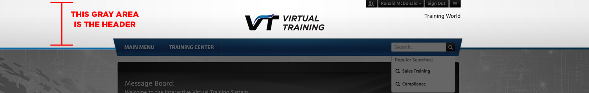
| Setting | Example | Notes |
|---|---|---|
| Location Text Color: | #222222 | This is the color of the Location Name found at the top right of the screen. |
| Header Height: | 156 | You can manipulate this height based on your needs - for example, if your logo is very tall you would want to increase this number to a more suitable one. |
| Background Color: | n/a | For this Theme we are leaving this field blank because we have an image covering the entirety of the header already. |
| Background Image: | header_background.png [2000x156] | We match the height of this image to our Header Height field. We included the 'navigation' bar imagery in this so we could simply lay the buttons on top of it (in Section 2), but this is entirely optional - you can add a navigation bar image later on. |
| Background Repeat: | repeat-x | This property defines how the background image is repeated. This is a commonly used CSS setting that you will see throughout the Themer. Here your options are: repeat, repeat-x, repeat-y, no-repeat, initial, and inherit. |
| Background Size: | 2000px auto | Set the width of your background and then whether or not to adjust the size. The available options are: auto, length, percentage, cover, contain, initial, and inherit. Again these are typical CSS settings you will find throughout the Themer. |
| Background Position: | center top | Your available options here are: left top, left center, left bottom, right top, right center, right bottom, center top, center center, center bottom. |
| Bottom Margin: | 17 | This is the distance between the bottom of the Header and the top of the Main Page. Because of the design of our header we added an additional 17 pixels to push the main page down a bit. We could have also changed the "Header Height" field to 173, and left this field 0, to achieve the same result. |
Section 2: Main Navigation
The Main Navigation section covers the main navigation bar buttons (What the buttons will look like - NOT what will actually go here.), the search button, and the header area behind the buttons.
Tip
The versatility of the themer allows us to make different design decisions, like in the Main Navigation bar in our example here. What we decided to do was include the artwork for the navigation bar in the Header section above. We then decided to lay a "Foreground" image on TOP of that image to show separation between the buttons. We could have just as easily included this image in the Header section and omitted the image in this section.
Main Navigation Buttons
| Setting | Example | Notes |
|---|---|---|
| Text Color: | #ffffff | This controls the color of the text in the buttons. |
| Text Shadow: | none | This is another commonly used CSS setting, the available options are: h-shadow, v-shadow, blur-radius, color, none, initial, inherit. You can use many of them in combination, for example: h-shadow, v-shadow, blur-radius and color would look like this in the field: "2px 2px 8px #FF0000" That would give us a shadow 2 pixels horizontal, 2 piexels vertical (so down and to the right) with an 8px blur radius (less pixels here of course would make the shadow more sharp) and a color. |
| Gradient Color 1: | transparent | This sets the top-half color of the button when it is not being hovered over. In our example we are not using this so we've entered "transparent." If you want to set a color, use the hex color code format - for example: #ffffff would be white. |
| Gradient Color 2: | transparent | This is the bottom-half part of the color set above. |
| Border Color: | transparent | This is the border color of the static button. Again as we chose not to use the button, we are leaving this transparent. When using this, you would use RGBA here - enter: rgba(0,0,0,0) for transparent to see how it works. |
| Text Color Hover: | #000000 | This is the color of the text when it is being hovered over. In our example we're using White, so the black text appears white. |
| Text Shadow Hover: | none | This is for the shadow of the text upon hovering over it. The settings for this field are the same as the "Text Shadow" field above. |
| Gradient Color 1 Hover: | #ffffff | Here you can set the top-half color of the Hover state of the button. In our example we use White on the top and Grey on the bottom to create a nice effect. Because we're using a White Hover color, when our text color is already White, we made sure to flip the text to Black (The setting above) so the text would still show up. |
| Gradient Color 2 Hover: | #d5d5d5 | This is the bottom-half color of the Hover state of the button. |
| Border Color Hover: | rgba(255,255,255,1) | This is the border color of the hover button. |
| Corner Radius: | n/a | Here you can modify the corner radius of the buttons. Leaving this blank will produce an almost square look, while entering 20px will give you almost a half circle. |
| Button Height: | n/a | This will increase your button height, leaving this blank will default to 1.8em. Warning: Do not try a size lower than 1.8, as it will cause issues on some screens. |
| Button Side Padding: | n/a | This will increase the width of the button in addition to the text inside the button. Leaving this blank will default the size to 0. |
| Button Margin (Right): | 23 | This is used to align the buttons horizontally into the correct position. In our example we enter 23, as this is 23 pixels from the 'left' boundry of the navigation area to help align our buttons correctly. |
Tip
This section is only for the "styling" of the buttons. You can Add, Remove or Manipulate the actual buttons under the Components -> Menus section.
After these first few sections you may notice a pattern emerging. Any time there is a button to style it will contain the same basic elements - so if your theme uses the same look and feel for all of the buttons, you can speed right through the next few areas using the same data. In our example we use slightly different settings for each area.
Main Navigation Search Button
| Setting | Example | Notes |
|---|---|---|
| Icon Color: | #cacaca | This sets the color of the maginifying glass icon |
| Gradient Color 1: | #434343 | This color will make up the top-half color of the button. |
| Gradient Color 2: | #000000 | This color will make up the bottom-half color of the button. |
| Border Color: | rgba(67,67,67,1) | |
| Icon Color Hover: | n/a | This field and the next 2 accepts hex color code format, such as: #ffffff |
| Gradient Color 1 Hover: | n/a | |
| Gradient Color 2 Hover: | n/a | |
| Border Color Hover: | rgba(255,255,255,1) |
Main Navigation Search Drop Down:
| Setting | Example | Notes |
|---|---|---|
| Icon Color: | #205b97 | This sets the color of the icon located in the search drop down. |
Main Navigation UI - this controls the header bar / image that sits behind the buttons (above)
| Setting | Example | Notes |
|---|---|---|
| Nav Y Position: | 108 | This is where your buttons and Foreground Image will line up on the navigation bar. |
| Background Color: | n/a | Here you can add a solid color to use as the background of the navigation bar. This will lay on TOP of the header background image, but BELOW the Foreground Image. |
| Foreground Image: | nav_bar_foreground.png [940x48] | This image will lay on TOP of your header background image. In our example here, because we already added the navigation bar in the header background image, we're adding a transparent image on top to show some separation between our buttons. (Note: if we wanted to add more buttons later on, we'd want to update this image) |
| Foreground Repeat: | no-repeat | |
| Foreground Position: | center top | |
| Padding: | 11px 15px 12px 15px |
Section 3: User Navigation
This section covers the Super User Dashboard Lightpad, Profile, Sign Out and Hamburger link navigation icons.
User Navigation:
| Setting | Example | Notes |
|---|---|---|
| Text & Icon Color: | #cacaca | |
| Text Shadow: | none | |
| Text Shadow Hover: | none | |
| Gradient Color 1: | rgba(66,66,66,1) | This is the top of the gradient. |
| Gradient Color 2: | rgba(0,0,0,1) | This is the bottom of the gradient. |
| Border Color: | rgba(0,0,0,0) | |
| Text & Icon Color Hover: | #ffffff | |
| Gradient Color 1 Hover: | rgba(31,90,150,1) | |
| Gradient Color 2 Hover: | rgba(0,56,116,1) | |
| Border Color Hover: | rgba(0,0,0,0) |
Section 4: Hamburger / Drop-Down Menu
Hamburger Menu
| Setting | Example | Notes |
|---|---|---|
| Title Color: | #ffffff | |
| Link Color: | #ffffff | |
| Icon Color: | #ffffff | |
| Rail Color: | #67a8ea | The "Rail" is the very top section of the Hamburger Menu - in this screenshot example it is the word "System Modules." |
Hamburger Menu Background
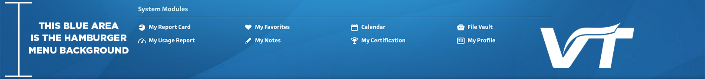
| Setting | Example | Notes |
|---|---|---|
| Background Image: | hamburger_menu_background.jpg [2000x294] | The Hamburger Menu height cannot be changed, so the height of this image can always be 294px. |
| Background Repeat: | no-repeat | |
| Background Size: | cover | |
| Background Position: | n/a | |
| Background Attachment: | n/a | |
| Background Color: | #205b97 |
Background Layered Image
| Setting | Example | Notes |
|---|---|---|
| Foreground Image: | hamburger_menu_background_layered.png [2000x250] | In our example here, we add a light blue highlight as well as an additional logo. |
| Background Repeat: | no-repeat | |
| Background Size: | 2000px auto | |
| Background Position: | center top | |
| Background Attachment: | n/a |
Section 5: Main Menu
Main Menu Background
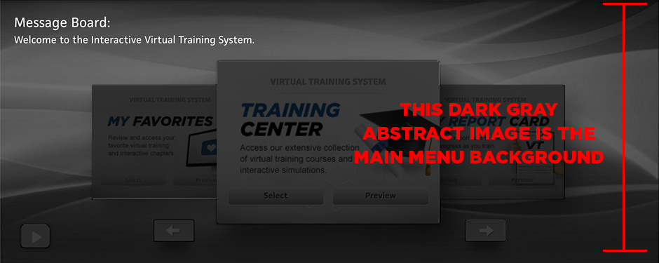
| Setting | Example | Notes |
|---|---|---|
| Background Image: | main_menu_bg.jpg [950x432] | This image lays behind the carousel panels. |
| Background Color: | rgba(66,66,66,1) | |
| Background Repeat: | n/a | |
| Background Size: | cover | |
| Background Position: | n/a | |
| Text Color: | #ffffff |
Intro Video Button
| Setting | Example | Notes |
|---|---|---|
| Icon Color: | #ffffff | |
| Background Color: | rgba(181,181,181,1) | |
| Icon Color Hover: | #ffffff | |
| Background Color Hover: | rgba(32,91,151,1) | |
| Text Color: | #ffffff |
Carousel Next & Previous Buttons
| Setting | Example | Notes |
|---|---|---|
| Arrow Color: | #ffffff | |
| Background Color: | #b5b5b5 | |
| Arrow Color Hover: | #ffffff | |
| Background Color Hover: | #205b97 |
Side Content Text
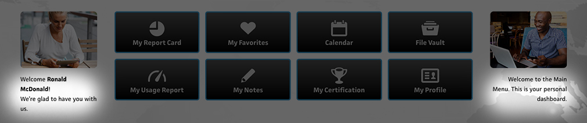
| Setting | Example | Notes |
|---|---|---|
| Text Color: | #000000 |
System Module Buttons
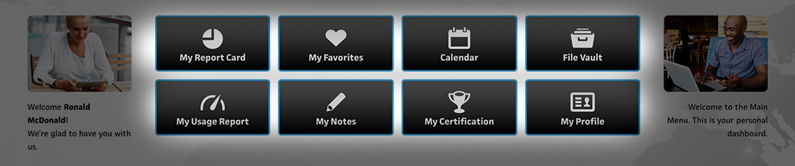
| Setting | Example | Notes |
|---|---|---|
| Text & Icon Color: | #cacaca | |
| Gradient Color 1: | rgba(79,79,79,1) | |
| Gradient Color 2: | rgba(0,0,0,1) | |
| Border Color: | rgba(55,145,194,1) | |
| Text & Icon Color Hover: | #ffffff | |
| Gradient Color 1 Hover: | rgba(31,90,150,1) | |
| Gradient Color 2 Hover: | rgba(0,57,117,1) | |
| Border Color Hover: | rgba(55,145,194,1) | |
| Border Style: | solid | |
| Border Width: | 2 | |
| Box Shadow: | n/a |
Dashboard Widgets
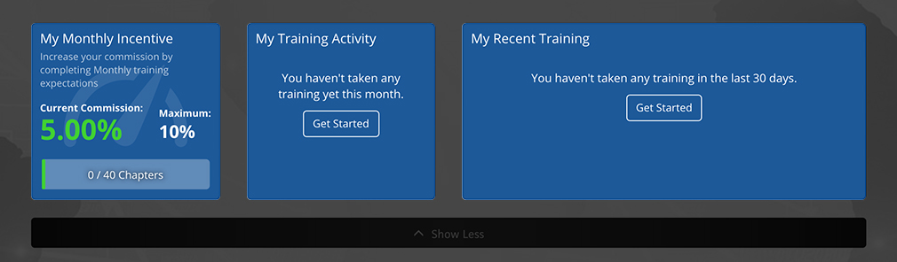
| Setting | Example | Notes |
|---|---|---|
| Text Color: | #ffffff | |
| Text Color Hover: | #ffffff | |
| Background Color: | rgba(32,91,151,1) | |
| Background Hover Color: | rgba(0,0,0,1) | |
| Border Color: | #417cb8 |
Show More/Less Collapser
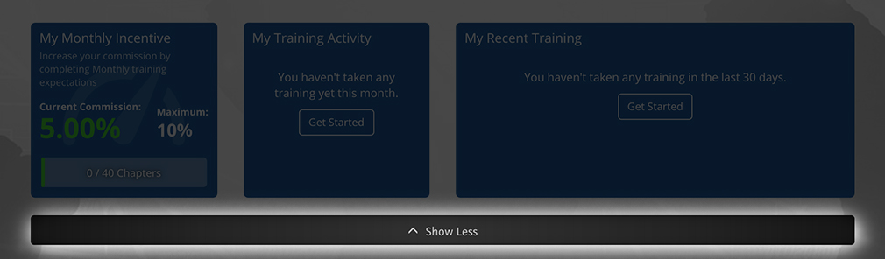
| Setting | Example | Notes |
|---|---|---|
| Text Color: | #cacaca |
Section 6: Main Page & Content
The areas in this section all deal with the main page background.
Page Background
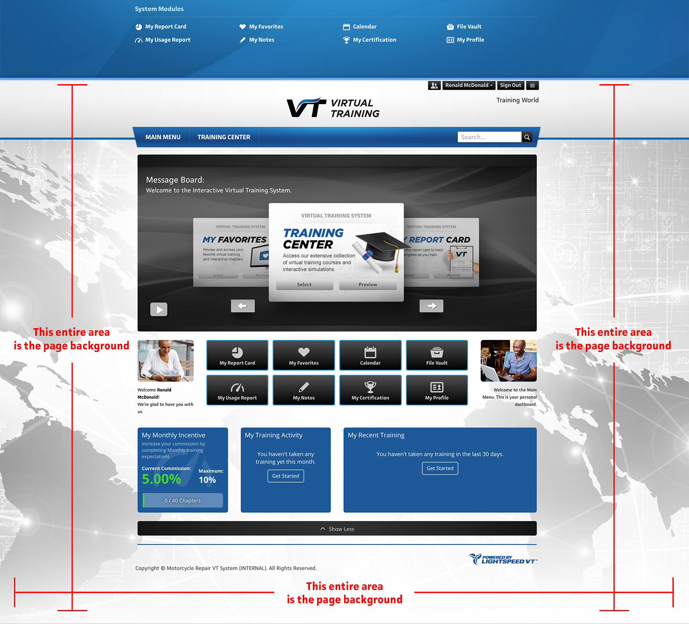
| Setting | Example | Notes |
|---|---|---|
| Background Color: | #ffffff | |
| Background Image: | page_background.jpg [2000x1239] | |
| Background Repeat: | n/a | |
| Background Size: | cover | |
| Background Position: | n/a | |
| Background Attachment: | n/a |
Page Background Layered Image
| Setting | Example | Notes |
|---|---|---|
| Foreground Image: | page_background_layered.png [2000x1200] | See the image above to see a before/after of this layered image. We user this here to add a highlight to the background. |
| Background Repeat: | no-repeat | |
| Background Position: | center top |
Content Heading
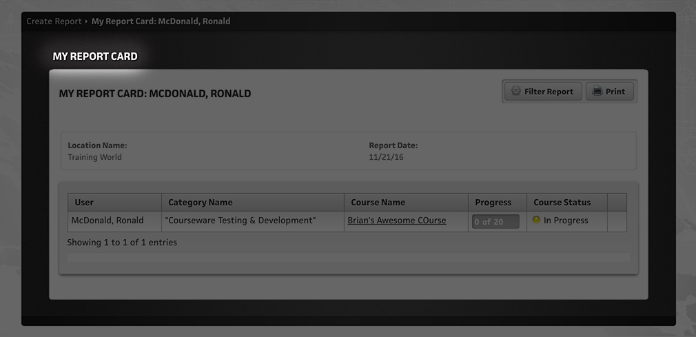
| Setting | Example | Notes |
|---|---|---|
| Heading Text Color: | #ffffff | This color is used on many of the screens throughout the system. |
| Heading Text Shadow Color: | #000000 1px 1px 1px |
Content Background
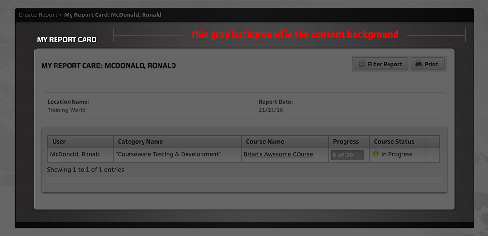
| Setting | Example | Notes |
|---|---|---|
| Background Color: | rgba(66,66,66,1) | |
| Background Image: | content_background.jpg [950x585] | This background is used on many of the screens throughout the system. |
| Background Repeat: | repeat-y | |
| Background Size: | n/a | |
| Background Position: | n/a |
Content Chrome Rails
| Setting | Example | Notes |
|---|---|---|
| Chrome Gradient Outside: | rgba(21,21,21,1) | |
| Chrome Gradient Inside: | rgba(35,35,35,1) | |
| Chrome Gradient Center: | rgba(49,49,49,1) |
Crumb Navigation
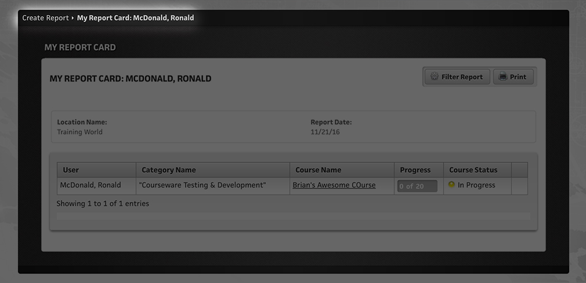
| Setting | Example | Notes |
|---|---|---|
| Text Color: | #cacaca | |
| Text Shadow: | none | |
| Divider Element Color: | rgba(202,202,202,1) |
Section 7: Footer
Navigation
| Setting | Example | Notes |
|---|---|---|
| Link Color: | #444444 |
LSVT Powered by Logo
| Setting | Example | Notes |
|---|---|---|
| Logo Color: | rgba(32,91,151,1) |
Background
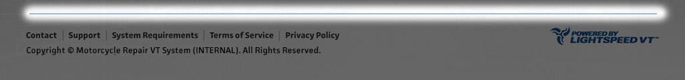
| Setting | Example | Notes |
|---|---|---|
| Footer Padding: | 20px 0 40px 0 | |
| Background Color: | n/a | |
| Background Image: | footer_background.png [940x2] | |
| Background Repeat: | n/a | |
| Background Size: | 940px auto | |
| Background Position: | center top |
Copyright
| Setting | Example | Notes |
|---|---|---|
| Text Color: | #444444 |
Section 8: Training Center
Page Content
| Setting | Example | Notes |
|---|---|---|
| Title Color: | #ffffff | |
| Title Shadow Color: | #000000 1px 1px 1px |
Content Background
| Setting | Example | Notes |
|---|---|---|
| Background Color: | rgba(66,66,66,1) | |
| Background Image: | training_center_background.jpg [950x585] | |
| Background Repeat: | repeat-y | |
| Background Size: | n/a | |
| Background Position: | n/a |
Section 9: VT Custom Player
VT Custom Player UI
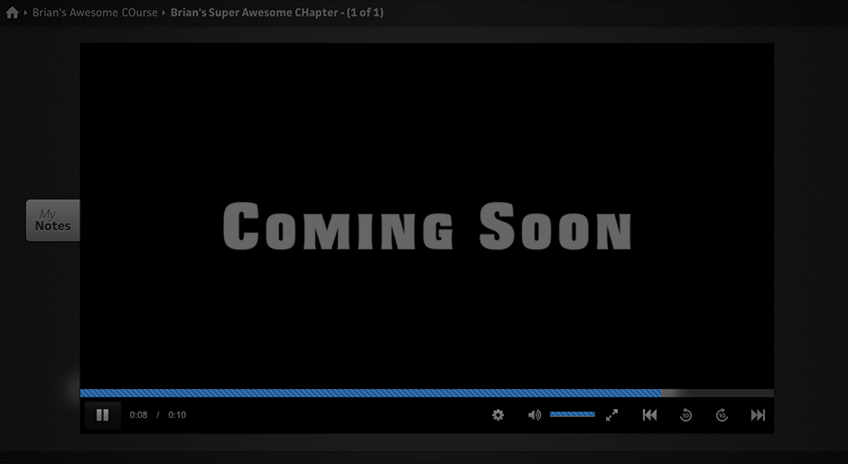
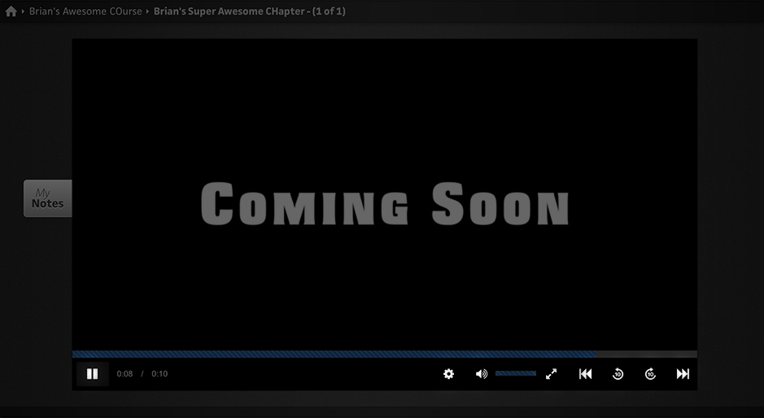
| Setting | Example | Notes |
|---|---|---|
| Progress Bar & Volume Color: | #205b97 | |
| Control Bar Icon Color: | #fffffff |
Section 10: Email Template Overrides
Overrides
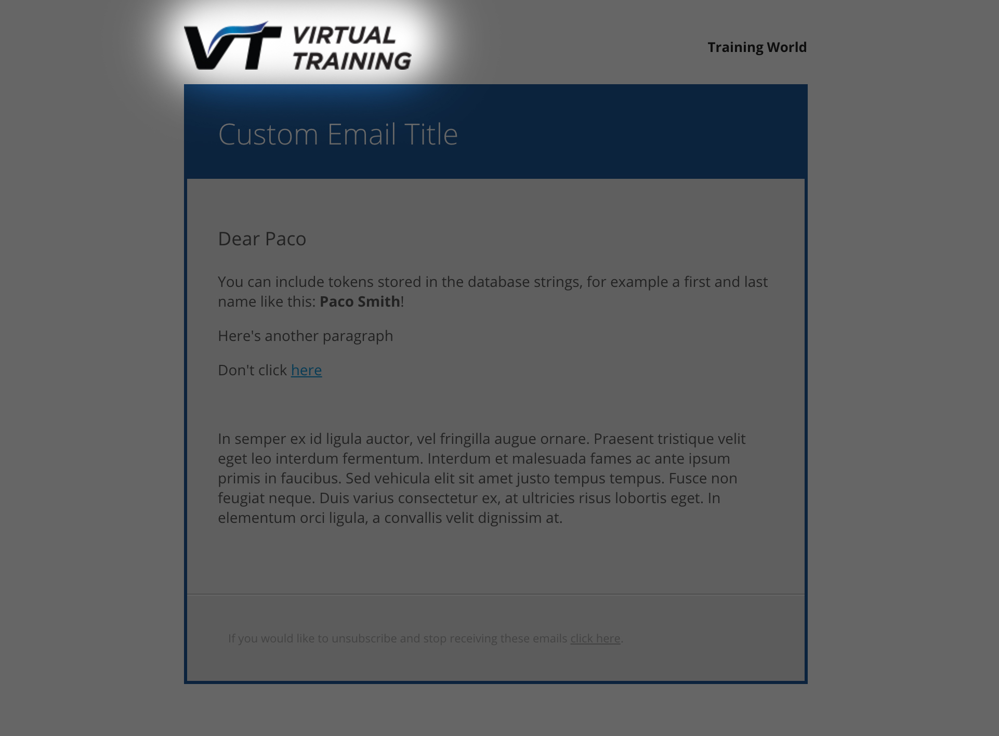
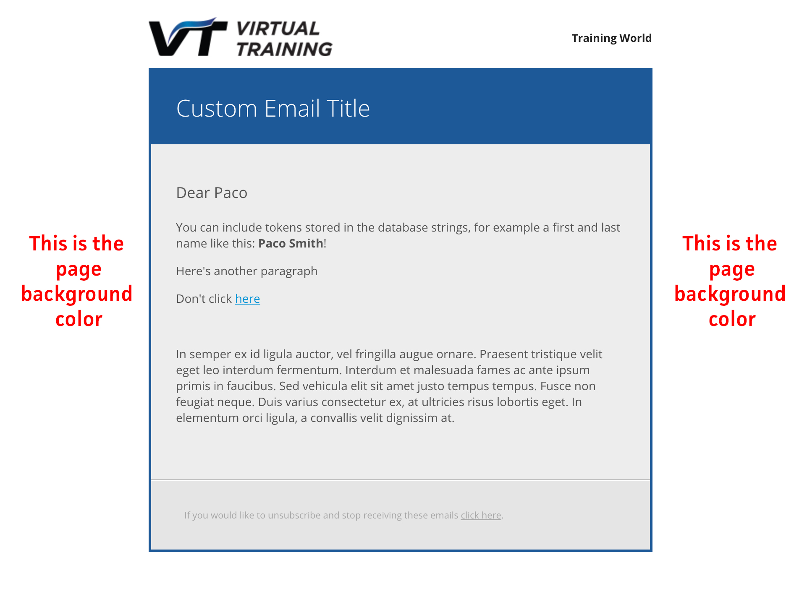
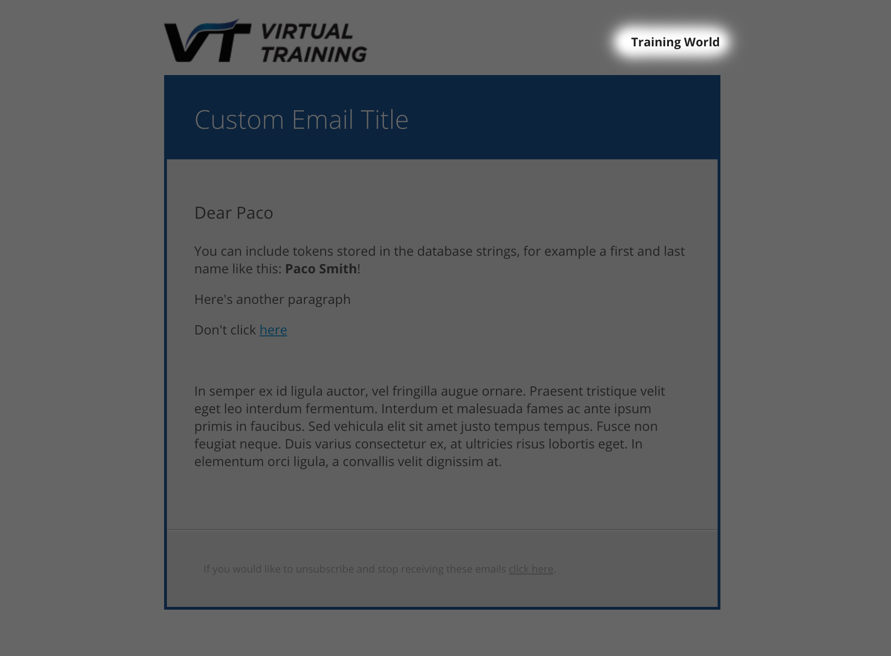
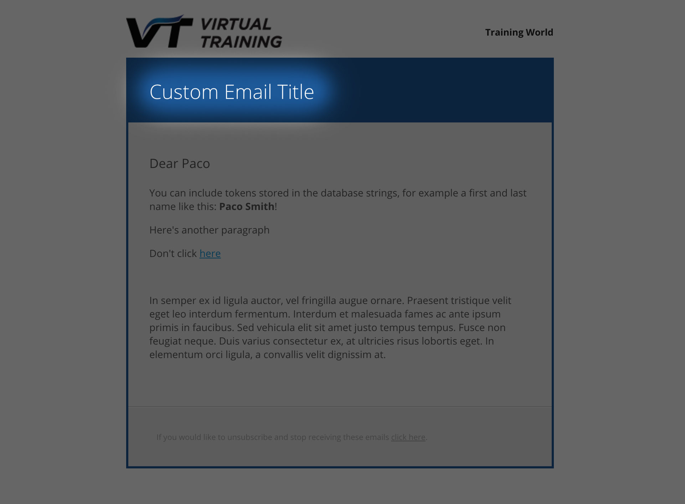
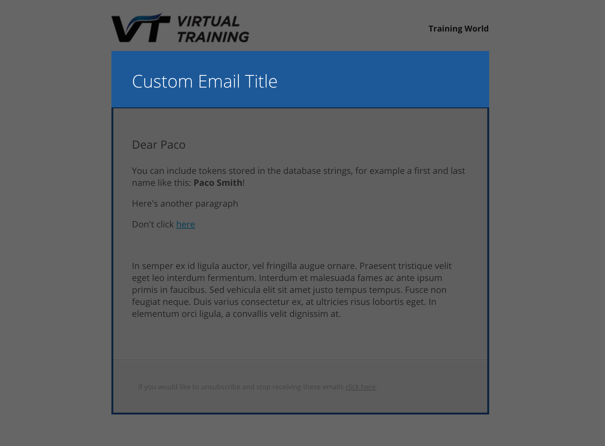
| Setting | Example | Notes |
|---|---|---|
| Logo: | header_logo.png [219x47] | |
| Page Background Color: | n/a | |
| Location Name Text Color: | n/a | |
| Header Text Color: | n/a | |
| Header Background Color: | #205b97 |
Components - Main Menu Carousel
In this section you can add or edit existing carousel panels to the main menu. To create a new panel, click on the "Create Panel" icon.
Note
The "Carousel Properties" area in this section is disabled on purpose.
To start a System out we typically use 4 default panels: Training Center, Report Card, File Vault, My Favorites, and then add more from there if they're necessary. Those default values are listed below.
Training Center Panel
| Setting | Example | Notes |
|---|---|---|
| Sort Order: | 1 | |
| Panel Background Image: | panel_background.png [512x384] | We typically use the same/default one for all of our Carousel Panels. |
| Panel Foreground Image: | panel_001.png [378x232] | The Foreground image is updated on each panel |
| Link Label: | Select | Typically we use "Select" as a default link label for all panels. |
| Link URL: | /tc/ | You can click "edit" on each of the existing panels to get an idea of the URLs we use. You can add any URL you wish. We use a "relative" path for ours as they are links in our system. If you are linking outside of the system you'll want to use a fully qualified "http://www..."" path. |
| Link Target: | _self | Open this in a new window or the same window. |
| Video Button Label: | Preview | Typically we use "Preview" as a default video button label for all panels. |
| Video URL (FLV): | http://videos.lightspeedvt.com/0000_lgid/mmenu/lsvt_sys_cpp_trainctr.flv | This field is for adding a "Preview" video to the Carousel Panel. The "FLV" field typically is for the the "Desktop" version (and the MP4 Field below it is for Mobile) However an MP4 will work here. Currently we do not have a shortcut here to select a video from your Media Library, so we suggest opening your Media Library in another window and then copy/paste the link in here. |
| Video URL (MP4): | http://videos.lightspeedvt.com/0000_lgid/mmenu/lsvt_sys_cpp_trainctr.mp4 | As mentioned in the note above, this is the "Mobile" version of the Carousel panel preview video. |
My Report Card
| Setting | Example | |
|---|---|---|
| Sort Order: | 2 | |
| Panel Background Image: | panel_background.png | |
| Panel Foreground Image: | panel_002.png | |
| Link Label: | Select | |
| Link URL: | /report_card/report_card.cfm | |
| Link Target: | _self | |
| Video Button Label: | Preview | |
| Video URL (FLV): | http://videos.lightspeedvt.com/0000_lgid/mmenu/lsvt_sys_cpp_myrprtcrd.flv | |
| Video URL (MP4): | http://videos.lightspeedvt.com/0000_lgid/mmenu/lsvt_sys_cpp_myrprtcrd.mp4 |
File Vault
| Setting | Example | |
|---|---|---|
| Sort Order: | 3 | |
| Panel Background Image: | panel_background.png | |
| Panel Foreground Image: | panel_003.png | |
| Link Label: | Select | |
| Link URL: | /vault/vault.cfm | |
| Link Target: | _self | |
| Video Button Label: | Preview | |
| Video URL (FLV): | http://videos.lightspeedvt.com/0000_lgid/mmenu/lsvt_sys_cpp_filevlt.flv | |
| Video URL (MP4): | http://videos.lightspeedvt.com/0000_lgid/mmenu/lsvt_sys_cpp_filevlt.mp4 |
My Favorites
| Setting | Example | |
|---|---|---|
| Sort Order: | 4 | |
| Panel Background Image: | panel_background.png | |
| Panel Foreground Image: | panel_004.png | |
| Link Label: | Select | |
| Link URL: | /search/index.cfm?view=favorites | |
| Link Target: | _self | |
| Video Button Label: | Preview | |
| Video URL (FLV): | http://videos.lightspeedvt.com/0000_lgid/mmenu/lsvt_sys_cpp_myfav.flv | |
| Video URL (MP4): | http://videos.lightspeedvt.com/0000_lgid/mmenu/lsvt_sys_cpp_myfav.mp4 |
Components - Menus
In this section you can modify existing Menus (The top navigation bar, the hamburger menu, and the System Modules) or add new items to the menus. If you are creating Menus for the first time in your Theme, we recommend you click the "Generate Default Menu Items" and then edit those.
To add a new Menu item, click on the "New Menu Item" icon at the top left of the screen. The following fields are available:
| Setting | Example | Notes |
|---|---|---|
| Name: | Training Center | What is the name of this Menu item? |
| URL: | /tc/ | Where does this Menu item link to? |
| Target: | _self | Is this opening on the current page, or a new page? |
| Rank: | 2 | What order should this be placed in amongst the other menu items? |
| Icon: | n/a | What icon would you like to use for this? (Optional) You can choose from our library of available icons found HERE. To add an icon, simply write in the word "icon-" and following the "-" enter the icon name. For example, for a Graduation cap, you would type in: "icon-graduation" |
| Enabled: | Yes | Turn this ON or OFF |
| Menus: | Top Nav Menu | You can select from 4 Menu areas: Top Nav Menu, Footer, System Module, or Quick Links (Note: Test menu currently serves no function - it is a placeholder for an upcoming feature.) |
Here are the System Generated Defaults:
Top Nav Menu
| Setting | Example | Notes |
|---|---|---|
| Main Menu: | / | We use relative paths for our navigation links, so Main Menu is a simple "/" as it takes you back to the root of the system. |
| Training Center: | /tc/ |
Footer Menu
The Footer Menu default values are out of date - this will be resolved in a future update of the system, but it is recommended to simply deactivate these links.
| Setting | Example | Notes |
|---|---|---|
| Contact: | ||
| Support: | ||
| System Requirements: | ||
| Terms of Service: | ||
| Privacy Policy: |
System Modules
These can be auto generated by selecting the 'auto generation' button at the top of the page.
| Setting | Example | Notes |
|---|---|---|
| My Report Card: | /report_card/report_card.cfm | |
| My Favorites: | /search/index.cfm?view=favorites | |
| Calendar: | /calendar/ | |
| File Vault: | /vault/vault.cfm | |
| My Usage Report: | /reports/index.cfm | |
| My Notes: | /search/index.cfm?view=notes | |
| My Certification: | /reports/certification/ | |
| My Profile: | [Appears automatically, controlled per user under user management] |
Quick Links
These are auto generated and are unable to be edited - this is because they are tied to privileges and access levels.
| Setting |
|---|
| Manage Users |
| Report Cards |
| Usage Reports |
| Watchdogs |
| Certification Reports |
| Manage Teams |
| Location Settings |
| Content Report |
| Super User Dashboard |